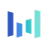

ImagineArtГенерация видео
ImagineArt используют, чтобы собирать видеосцену по описанию или визуальному исходнику. Ещё одно направление работы: менять фотографии с учётом выбранного оформления.
Генерация изображений: Используйте один запрос для нескольких сервисов. Сравните композицию, детали, работу с референсом и возможности редактирования.
Сделайте иллюстрацию к материалу о домашней библиотеке, описав её содержание словами. Укажите предметы, композицию и цветовую гамму; оставьте место под заголовок и проверьте читаемость изображения в размере карточки статьи.
Нарисуй иллюстрацию для статьи о домашней библиотеке: деревянный стеллаж, кресло и светильник, тёплая палитра. Справа оставь спокойное пустое пространство под заголовок, букв и надписей не добавляй.

ImagineArt используют, чтобы собирать видеосцену по описанию или визуальному исходнику. Ещё одно направление работы: менять фотографии с учётом выбранного оформления.
Сравнивать «Lensco» с другими инструментами раздела «Генерация изображений» удобнее на одинаковом исходном материале.
Для «Lucidpic» сначала определите свою задачу и требуемый результат. Карточка относится к направлению «Генерация изображений».
«Luw AI» помогает представить оформление помещения.
«Midjourney Art AI Generator» готовит визуальные материалы по заданию.
Muse Pro добавляет средства ИИ к рисованию на iPad и поддерживает Apple Pencil. Пользователь работает со слоями и ползунками, может обращаться к генерации изображения из текста. Дополнительные возможности включают случайное варьирование и подсказки во время работы, а результат предназначен также для печати.
Для «My Waifus» сначала определите свою задачу и требуемый результат. Карточка относится к направлению «Генерация изображений».
Сравнивать «NVIDIA Canvas» с другими инструментами раздела «Генерация изображений» удобнее на одинаковом исходном материале.
Для «Pebblely Fashion» сначала определите свою задачу и требуемый результат. Карточка относится к направлению «Генерация изображений».
«Pfpmaker» готовит визуальные материалы по заданию. Дополнительно «Pfpmaker» работает с материалами для социальных площадок.
«PhotoMaker V2» помогает исправлять и оформлять фотографии.
«PicverseAI» готовит визуальные материалы по заданию.
PixAI помогает создавать изображения средствами генеративного ИИ. Инструмент предназначен для подготовки нового визуального материала с помощью нейросети.
«Pixelfy» готовит визуальные материалы по заданию.
«pixu AI» готовит визуальные материалы по заданию.
«Prodia AI Art» готовит визуальные материалы по заданию.
Reimagine создаёт несколько изображений по текстовому запросу и дополняет генерацию средствами обработки. В наборе предусмотрены очистка, удаление окружения и надписей, изменение света и масштабирование. Продукт объединяет поиск визуального варианта с последующей правкой, позволяя рассматривать создание картинки и работу над её отдельными элементами как связанные задачи.

Seedream предназначен для визуальных генераций и работы с изображениями. Запрос и исходный материал помогают определить композицию, а результат нужно проверять на деталях.
«Selfarama Books» готовит визуальные материалы по заданию.
«Simulai» готовит визуальные материалы по заданию. «Simulai» подготавливает варианты логотипов.
«smexy AI» представлен в разделе «Генерация изображений». При выборе проверьте нужную операцию и условия работы с результатом.
Spacely AI относится к инструментам, которые помогают искать решения для пространства. Ещё одно направление работы: получать изображения из словесного задания.
Для «Stable AI» сначала определите свою задачу и требуемый результат. Карточка относится к направлению «Генерация изображений».
«Stablecog» готовит визуальные материалы по заданию.
«SUPERMACHINE» готовит визуальные материалы по заданию.
«TattooJenney» представлен в разделе «Генерация изображений». При выборе проверьте нужную операцию и условия работы с результатом.
«Text to Image Editor» перерабатывает формулировки написанного текста.
Yandex ART API позволяет разработчикам создавать изображения по текстовому описанию. Запрос к генеративной модели выполняется программно через облачный интерфейс Яндекса.
НейроЖук предлагает несколько направлений генерации: визуальный контент, звук и текстовые задачи. Перед началом полезно определить нужный результат и выбрать соответствующий режим.
«AIArt» готовит визуальные материалы по заданию.
«Amazing AI» готовит текстовый черновик по условиям задачи.
«Anime AI (animeai.app)» добавляет движение исходной картинке. «Anime AI (animeai.app)» также готовит визуальные материалы по заданию.
Для «ArtBot AI» сначала определите свою задачу и требуемый результат. Карточка относится к направлению «Генерация изображений».

Artguru используют, чтобы собирать видеосцену по описанию или визуальному исходнику. Ещё одно направление работы: менять фотографии с учётом выбранного оформления.
«Artisse AI» представлен в разделе «Генерация изображений». При выборе проверьте нужную операцию и условия работы с результатом.
«ChatAvatar.me» создаёт портретные и аватарные изображения.
«Christmas Images Generator» работает с материалами для социальных площадок.
Designs.ai распределяет общее задание между специализированными ИИ-агентами для разных видов контента. Платформа работает с изображениями и видео, презентациями и звуком. При подготовке материалы ориентируются на единый стиль бренда, связывая отдельные направления генерации в общей задаче оформления и коммуникации.
«Devoid Diffusion» готовит визуальные материалы по заданию.
Для «Diffusion Art» сначала определите свою задачу и требуемый результат. Карточка относится к направлению «Генерация изображений».
Drawww представляет собой приложение для рисования на iPad с ИИ-генерацией изображений. В нём предусмотрены работа со слоями, настраиваемые художественные инструменты и форматы для обмена материалами. Пользователь может сочетать собственную работу над рисунком с генеративным направлением, организуя изображение и его дальнейшую передачу внутри приложения.
«Dreamer» готовит визуальные материалы по заданию.

DreamStudio используют для задачи: получать изображения из словесного задания. Ещё одно направление работы: готовить материалы о товарах и услугах.
«DSNR» готовит визуальные материалы по заданию.
«Eye for AI» готовит визуальные материалы по заданию.
FLUX.1 создаёт изображения из текстовых описаний. Семейство Black Forest Labs доступно через разные способы запуска, условия которых зависят от выбранного варианта модели.
«Glowup AI» представлен в разделе «Генерация изображений». При выборе проверьте нужную операцию и условия работы с результатом.

Grok объединяет диалог, поиск по вебу и X, работу с материалами и создание контента. Для исследования полезно отдельно проверять найденные источники и собственные выводы модели.
Страница 5 из 14